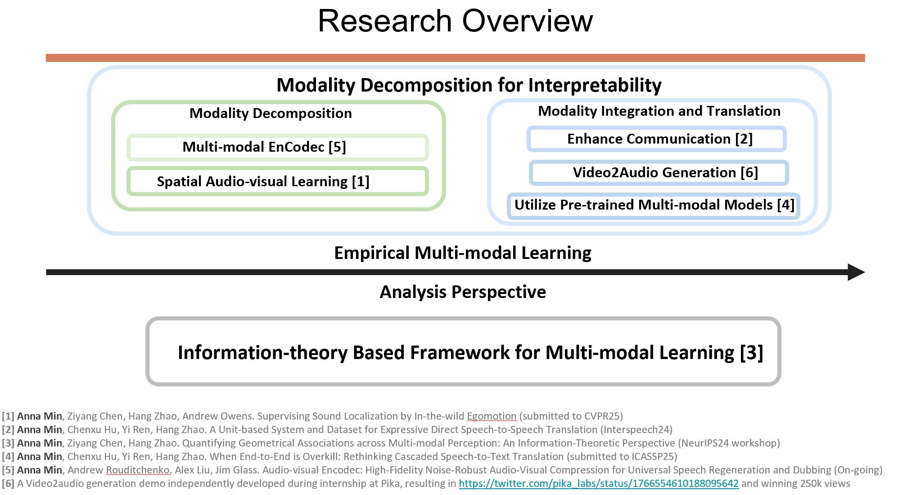
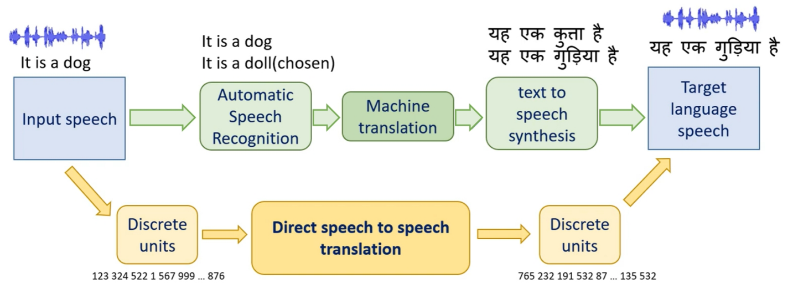

|
Anna Min | 闵安娜 Hi! I am a senior undergraduate at Tsinghua University. I work with Prof. Jim Glass, Prof. Andrew Owens and Prof. Hang Zhao.
I appreciate the opportunities to work with or learn from all of my kind and amazing collaborators and mentors. I also love generally chatting about research or life with people in different backgrounds. Feel free to reach out for any reason! I am applying for a PhD position starting in 2025. Please contact me through email if you are interested in my research! Email: anna.min1754@gmail.com (if you prefer an edu email, annamin@csail.mit.edu; my Tsinghua email sometimes experiences delays) Google Scholar / Email / Twitter / Github / Linkedin / Wechat |

|
Updates
|
ResearchMy previous research lies at the intersection of machine learning, computer vision, and signal processing. Currently, I have a broad interest in multimodal perception and interactive generation, whether machine-centered or human-centered. I have worked with natural signals, such as vision and audio, sometimes exploring them through text as an intermediary. In my research, I try to apply bold imagination, principled thinking and rigorous empirical studies. |

|
Supervising Sound Localization Using In-the-wild Ego-motion
Anna Min, Ziyang Chen, Hang Zhao, Andrew Owens in submission Learn spatial sound sources in the wild using ego-motion signals derived from visual cues with limited perspectives. |
|

|
A Unit-based System and Dataset for Expressive Direct Speech-to-Speech Translation
Anna Min*, Chenxu Hu*, Yi Ren, Hang Zhao Interspeech 2024 [Paper] Propose a dataset and pipeline with aligned bilingual audio tracks sharing similar emotions without using text as an intermediate for lesser-spoken languages and dialects. |
Selected Awards
|
Service
|
MiscellaneaI maintain a strong belief in analytical thinking and continuous self-improvement, and welcome any advice or feedback. You can use this Anonymous Form or discuss with me in person. I like reading. I was an amateur illustrator passionate about portraiture and landscapes, and a piano player attempting to write music pieces (Chilling Spring), currently intrigued by generative models. In the past I designed and developed video games (eg: A Player vs AI Strategy Game). My Chinese name is pronounced as Ān Nà, which is similar to Anna. |
|
Last updated: 2025-01-11 06:50:36 Template from Jonathan Barron. |